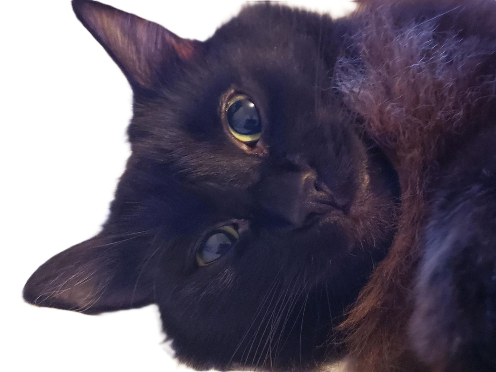

Menu and Exercises designed specifically for you and your cat
Meal Preparation and Nutrition

Step by Step meal preparation, sourced from local farms, vegetarian and meat options, in-person or virtual. From kittens to aging pets, meals are modified for skin conditions and allergies.
Exercises and Training
Exercises are built around using different styles of play that encourages their prey instinct. Training classes available from beginner to advanced. In-person or virtual, for kittens to aging pets including any with mobility issues.
 Image
Image
A little about us
We are a family run business, all female, all indigenous and all of us are cat guardians.Our pets are family and we constantly seek out ways for them to live their longest and bestest lives
First one of a kind Health and Wellness business for you and your cat(s)
Not a one size fits all approach, our services are unique and crafted to you and your pets alone. We offer a variety of different services available from the comfort of your own home or virtual to avoid any additional stress to you and your pets.
We are animal advocates and donate a portion of our proceeds to charities all around the world
Ask us about our
- Free consultation
- Family discount
- Multicat options